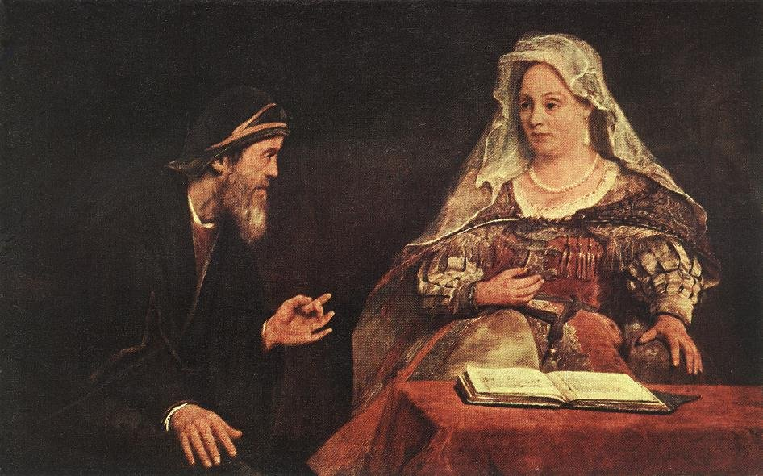

Ester 4 — La Traducción Mister

Ester 4:13–14. De Gelder pinta a los dos solos y muy juntos, Mardoqueo hablando y la reina escuchando, que es el intercambio de la mitad del capítulo; el libro sobre la mesa, el velo y el traje del siglo XVII son del propio pintor, y el capítulo hace hablar a Mardoqueo y a Ester solo por medio de Hatac, sin escena cara a cara.

Notas del traductor — versículo por versículo
⭐ Cilicio, ceniza y un clamor. «Y Mardoqueo rasgó» está en este único versículo, y «un clamor grande y amargo» está en este único versículo. «Cilicio y ceniza» está en cuatro versículos de la Biblia hebrea: Ester 4:1 y 4:3, Isaías 58:5 (ya en estas páginas, donde es el ayuno sobre el que Jehová pregunta) y Daniel 9:3 (ya en estas páginas); las palabras son saq y efer. La RV60 dice «rasgó sus vestidos, se vistió de cilicio y de ceniza, y se fue por la ciudad clamando con grande y amargo clamor», la NVI «se rasgó las vestiduras, se vistió de luto, se cubrió de ceniza y salió por la ciudad dando gritos de amargura», la TNM 1987 «a rasgar sus prendas de vestir, y a ponerse saco y ceniza» y la TNM 2019 «rasgó su ropa, se vistió de tela de saco y se echó cenizas encima».
⭐ La puerta del rey. «Porque no se podía entrar por la puerta del rey» está en este único versículo: Mardoqueo llega hasta la puerta, porque el cilicio no puede pasar. La RV60 dice «pues no era lícito pasar adentro de la puerta del rey con vestido de cilicio»; la NVI dice «solo pudo llegar hasta la puerta del rey».
⭐ En cada provincia. El versículo lo dice dos veces, provincia y provincia (medinah), dondequiera que llegaba la palabra del rey y su ley: gran duelo entre los judíos, y cuatro cosas hechas, ayuno, llanto, lamentación y el cilicio y la ceniza tendidos como lecho para muchos. Ninguna de las cuatro es una oración. La RV60 dice «tenían los judíos gran luto, ayuno, lloro y lamentación; cilicio y ceniza era la cama de muchos», la NVI «había gran duelo entre los judíos, con ayuno, llanto y lamentos» y la TNM 1987 «había gran duelo entre los judíos, y ayuno y llanto y plañido».
⭐ La reina se retuerce. «Y se retorció» (vattitchalchal) está en este único versículo; las versiones lo toman como angustia. La RV60 dice «la reina tuvo gran dolor», la NVI «ella se angustió mucho», la TNM 1987 «la reina quedó muy adolorida» y la TNM 2019 «ella se preocupó muchísimo». Envía ropa para quitarle el cilicio, y «él no los aceptó» está en este único versículo. ⚠ Al comienzo de este versículo el hebreo imprime dos veces la llegada de las doncellas, escrita tavo’ina y leída tavo’na, un par ketiv/qere guardado en la columna hebrea.
⭐ Hatac. «Ester llamó a Hatac» está en este único versículo. El nombre está en cuatro versículos, 4:5, 4:6, 4:9 y 4:10, todos en este capítulo, y es uno de los eunucos (saris) del rey puesto a su servicio. La RV60 dice «Hatac», la NVI «Hatac» y la TNM 1987 «Hatac»; el nombre sí se escribe distinto en otras lenguas, y en este capítulo la ortografía española coincide en las tres.
⭐ El dinero y la copia. «La cuenta exacta del dinero» está en este único versículo. La RV60 dice «la plata que Amán había dicho que pesaría», la NVI «la cantidad exacta de dinero» y la TNM 1987 «la declaración exacta del dinero». La copia es patshegen, una palabra tomada del persa, y está en tres versículos de la Biblia hebrea, los otros dos Ester 3:14 y Ester 8:13. Es una copia de la ley escrita (dat) que salió de Susa. La RV60 dice «la copia del decreto que había sido dado en Susa», la NVI «una copia del texto del edicto promulgado en Susa» y la TNM 1987 «una copia del escrito de la ley». ⚠ El mismo par de formas escrita y leída aparece al final del versículo 7, escrito biyehudiyyim y leído bayehudim, «los judíos».
⭐ Para suplicar por su pueblo. Hatac ha de mostrar la copia a Ester y decírselo, y encargarle que entre al rey lehitchannen lo, a suplicarle y a presentar petición delante de él por su pueblo. La RV60 dice «a suplicarle y a interceder delante de él por su pueblo», la NVI «para implorar clemencia e interceder en favor de su pueblo» y la TNM 1987 «suplicar favor de él y presentar solicitud directamente delante de él».
⭐ Una sola ley. «Una sola ley suya» está en este único versículo: quien entra al rey en el patio interior (chatzer) sin ser llamado ha de ser muerto, salvo aquel a quien el rey extienda el cetro de oro, que está en dos versículos, este y Ester 5:2. La RV60 dice «una sola ley hay respecto a él: ha de morir; salvo aquel a quien el rey extendiere el cetro de oro, el cual vivirá», la NVI «hay una sola ley: la pena de muerte. La única excepción es que el rey, extendiendo su cetro de oro, le perdone la vida», la TNM 1987 «su única ley es la de darle muerte; solo en caso de que el rey le extienda el cetro de oro».
⭐ Treinta días. «No he sido llamada para entrar al rey» está en este único versículo, zeh sheloshim yom, «estos treinta días». Es su razón, y es el único dato de su respuesta que el mensaje de Mardoqueo no tenía. La RV60 dice «y yo no he sido llamada para ver al rey estos treinta días», la NVI «hace ya treinta días que el rey no me ha pedido presentarme ante él»
⭐ «No imagines». «No imagines en tu alma» está en este único versículo: la casa del rey no es un refugio. La RV60 dice «No pienses que escaparás en la casa del rey más que cualquier otro judío», la NVI «No te imagines que por estar en la casa del rey serás la única que escape con vida de entre todos los judíos», la TNM 1987 «No te imagines dentro de tu propia alma que la casa del rey escapará más que todos los demás judíos» y la TNM 2019 «No pienses que por estar en el palacio real tienes más posibilidades de escapar con vida que los demás judíos».
⭐ Callada, y alivio desde otro lugar. «Si callas absolutamente» está en este único versículo, y luego «alivio y liberación» está en este único versículo: revach es espacio o respiro, la palabra del hueco que Jacob manda dejar entre sus rebaños en Génesis 32:17 (ya en estas páginas, en la página inglesa). «Desde otro lugar» está en este único versículo. La RV60 dice «respiro y liberación vendrá de alguna otra parte para los judíos», la NVI «de otra parte vendrán el alivio y la liberación para los judíos», la TNM 1987 «alivio y liberación mismos se levantarán para los judíos de algún otro lugar» y la TNM 2019 «los judíos recibirán ayuda y liberación de alguna otra parte».
⚠ La palabra que no está. El hebreo no dice quién o qué es el otro lugar, y una búsqueda en todo el libro no halla ni el Nombre ni elohim en ningún versículo de Ester. Las versiones españolas del estante tampoco lo añaden en este versículo. En el uso judío posterior la palabra para lugar, makom, llegó a ser un nombre de Dios; eso es una lectura posterior de la palabra, no algo que el versículo diga, y esta traducción guarda «otro lugar».
⭐ «Para un tiempo como este». «Para un tiempo como este» está en este único versículo, y «has llegado al reino» está en este único versículo. La pregunta se hace con umi yode’a: «Y quién sabe» está en tres versículos, Eclesiastés 2:19, Eclesiastés 8:1 y este, y «quién sabe» está en diez, entre ellos David en 2 Samuel 12:22 y el Salmo 90:11 (ambos ya en estas páginas), Joel 2:14 (ya en estas páginas) y Jonás 3:9 (todavía no). Es una pregunta y no una afirmación: el versículo no dice que ella fue puesta allí para esto. La RV60 dice «¿Y quién sabe si para esta hora has llegado al reino?», la NVI «¡Quién sabe si precisamente has llegado al trono para un momento como este!», la TNM 1987 «Y ¿quién hay que sepa si has alcanzado la dignidad real para un tiempo como este?» y la TNM 2019 «¿quién sabe si no te has convertido en reina para ayudar en un momento como este?».
⭐ Ayunad por mí. «Tres días, noche y día» está en este único versículo, y «y no comáis ni bebáis» está en este único versículo: el ayuno es sin agua. El verbo es el simple tsumu, «ayunad» (tsom). La RV60 dice «ayunad por mí, y no comáis ni bebáis en tres días, noche y día», la NVI «para que ayunen por mí. Durante tres días no coman ni beban ni de día ni de noche», la TNM 1987 «y ayunen por mí, y ni coman ni beban por tres días, noche y día» y la TNM 2019 «y ayunen por mí. No coman ni beban durante tres días y tres noches».
⭐ «Lo cual no es conforme a la ley». «Lo cual no es conforme a la ley» está en este único versículo, la dat del versículo 11, ahora lo que ella va a quebrantar; y «si perezco, que perezca» está en este único versículo, con la misma forma del «si soy privado de mis hijos, que lo sea» de Jacob en Génesis 43:14 (ya en estas páginas). La RV60 dice «y si perezco, que perezca», la NVI «¡Y, si perezco, que perezca!» y la TNM 1987 «y en caso de que tenga que perecer, tendré que perecer».
⭐ Mardoqueo pasó adelante. «Y Mardoqueo pasó adelante» está en este único versículo. La RV60 dice «Entonces Mardoqueo fue, e hizo conforme a todo lo que le mandó Ester», la NVI «Entonces Mardoqueo fue y cumplió con todas las instrucciones de Ester» y la TNM 1987 «Mardoqueo pasó adelante y procedió a hacer todo lo que Ester le había dado el mandato de hacer». El orden se ha vuelto: en el capítulo 2 Ester hace lo que Mardoqueo le manda (Ester 2:10 y 2:20), y aquí Mardoqueo hace «conforme a todo lo que Ester le había mandado».
Patrones que vale la pena llevar adelante
Donde esta traducción mantiene las palabras exactas y distintas: «ayuno» para tsom; «cilicio y ceniza» para saq va-efer; «la ley» para dat en los versículos 3, 8, 11 y 16; «alivio» para revach y «liberación» para hatsalah; «otro lugar» para makom acher; «quién sabe si» para umi yode’a im; «perecer» para avad en los versículos 14 y 16. El hebreo tiene dos pares escritos y leídos en este capítulo, en el versículo 4 y el versículo 7, guardados como están impresos. No se añade ninguna palabra para Dios, porque ninguna está escrita.
Ecos pagados. Isaías 58:5 (el ayuno con cilicio y ceniza); Génesis 32:17 (revach) y 43:14 («si soy privado de mis hijos»); 2 Samuel 12:22 y Salmo 90:11 («quién sabe»).
Ecos plantados. Ester 3:14, 5:2 y 8:13 (la copia y el cetro de oro), Ester 2:10 y 2:20, Daniel 9:3, Eclesiastés 2:19 y 8:1, Jonás 3:9. Nada de esto está todavía en estas páginas.
⚠ Una nota sobre el orden: Ester está en estas páginas en los capítulos 1 y 4, elegidos por la frecuencia con que se lee un pasaje y no en secuencia. El hilo secuencial no cambia: el siguiente en la secuencia es Ester 2.